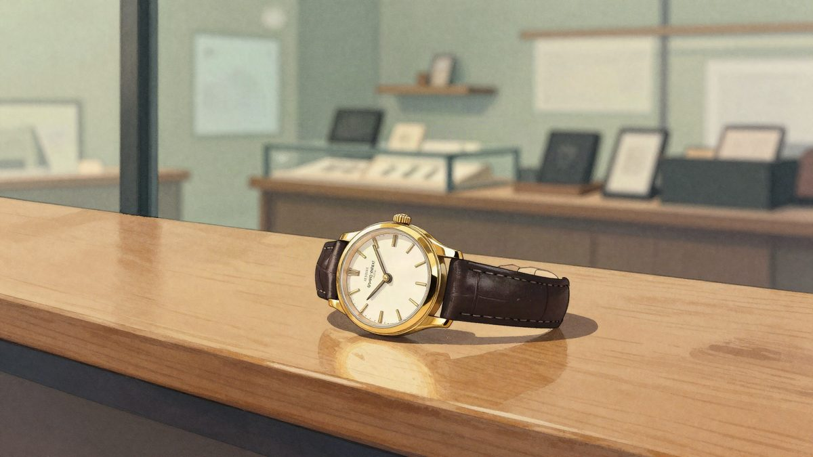
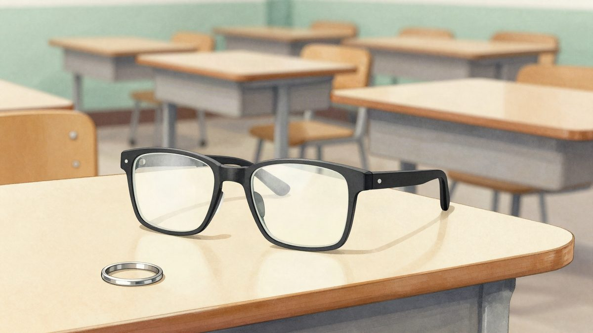

Ukraden sat od 290.000 dolara vraćen trgovini u Tokiju uz ručno napisanu ispriku

Luksuzni sat Audemars Piguet, ukraden prošlog tjedna iz trgovine u Tokiju, vraćen je poštom uz ručno napisanu ispriku kradljivca. Vrijedan je oko 250.000 eura, a policija i dalje traži muškarca.
Luksuzni švicarski sat vrijedan oko 290.000 dolara (oko 250.000 eura), ukraden prošlog tjedna iz trgovine u Tokiju, vraćen je trgovini. Sat marke Audemars Piguet stigao je poštom, a uz njega i ručno napisana poruka u kojoj se kradljivac ispričava, javljaju japanski mediji.
Muškarac se u trgovini predstavio kao kupac i isprobao sat. Zatim je pobjegao sa satom na ručnom zglobu.
List Asahi Shimbun i drugi mediji, pozivajući se na neimenovane izvore iz istrage, pišu da je trgovina potom primila paket sa satom i porukom. Serijski broj navodno potvrđuje da je riječ o ukradenom primjerku. Na paketu su bili napisani ime i adresa, no policija vjeruje da su ti podaci lažni, navodi Japan Times.
Trgovina nije željela komentirati slučaj kad ju je kontaktirala agencija AFP. Tokijska policija i dalje traži muškarca zbog sumnje na krađu, piše Asahi Shimbun.
Ranija krađa u istom kompleksu
U kolovozu su iz druge trgovine u istom trgovačkom kompleksu ukradena četiri luksuzna sata ukupne vrijednosti 200 milijuna jena (oko 1,1 milijun eura). Dvoje čileanskih državljana uhićeno je zbog sumnje na krađu i potom optuženo, izvijestio je Japan Times.
Nakon te krađe policija je za vlasnike trgovina satovima održala edukaciju o prevenciji kriminala. Asahi Shimbun piše da im je savjetovala da u izlozima izlažu samo replike. Pokazali su im i kako se posebnom oblogom na vitrinama može otežati razbijanje stakla.
Izvor: Reddit r/nottheonion
Povezani članci

Kina: na teoriji za motor koristio AI naočale i pametni prsten, uređaj pogriješio sve odgovore s višestrukim izborom8. studenoga 2026. Prevaranti su preuzeli kontrolu nad mobitelom: lažni "klijentski servis" kupio je devet DJI kamera na žrtvin kredit7. studenoga 2026.
Prevaranti su preuzeli kontrolu nad mobitelom: lažni "klijentski servis" kupio je devet DJI kamera na žrtvin kredit7. studenoga 2026. Prodao tri iPhonea 18 Pro Max na Xianyuu, zarada oko 300 eura, a banka mu je zamrznula račune7. studenoga 2026.
Prodao tri iPhonea 18 Pro Max na Xianyuu, zarada oko 300 eura, a banka mu je zamrznula račune7. studenoga 2026.